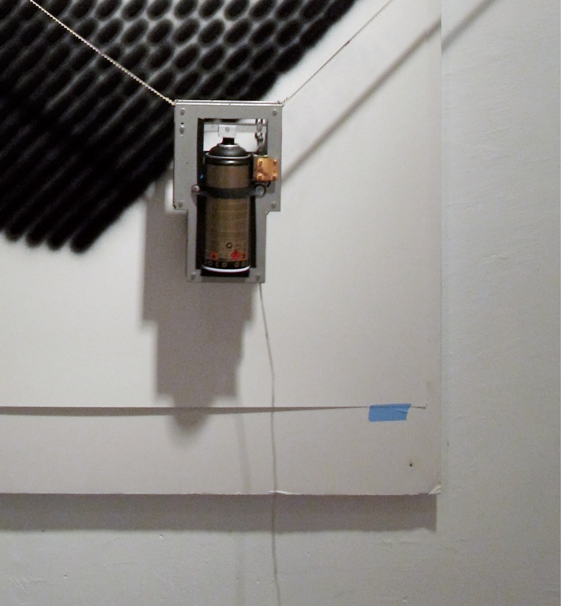

HEKTOR
Hektor is a portable spray paint output device for computers. It was created in collaboration with engineer Uli Franke for Jürg Lehniʼs diploma project at ECAL (École cantonale dʼart de Lausanne) in 2002.
Hektor’s light and fragile mechanism consists only of two motors, toothed belts and a spray can holder. By the means of geometric triangulation and gravity, a custom software moves the spray can along predefined drawing paths and remotely activates the can’s nozzle.
Due to mechanismʼs fragile nature, Hektor appears to be in constant negotiation with gravity, causing it to sometimes tremble and wobble.
The machine was created to explore the ambiguous and poetic qualities that stem from the contrast between these low-tech aspects and the precision of the vector graphics technology that is at work behind the scenes. Following the urge to make a statement on today’s clean computer aesthetics, Hektor was conveived as a post-industrial tool that is allowed to be unprecise and and convey these abstract mathematical geometries in a different, sometimes almost human way — a tool with an inherently particular and distinctive aesthetic.
Through the years, Hektorʼs nature and aesthetic was explored through many projects in different contexts, often in collaboration with other artists and designers. These works gave Hektor its character and became the machine’s body of work.
Hektor is controlled by a bespoke software written in Scriptographer, running inside Adobe Illustrator.
A geometric path-finding algorithm calculates the motion paths required by the fragile mechanical installation to move smoothly and not lose the battle against gravity.
The algorithm then translates these paths into rotations of the two stepper motors that position the spray-can, and coordinates the pressing of its nozzle.
"Hector Draws a Landscape"
Lee 3 Tau Ceti Central Armory Show, Villa Arson, Nice, 2003

"Hektor Meets Dexter Sinister"
Dexter Sinister & Jürg Lehni, Swiss Institute, New York, 2007

"Hektor Meets William Morris"
Will Holder & Jürg Lehni, Touretteʼs II, Gallery W139, Amsterdam, 2003

"Hektor Circles"
Laurenz Brunner & Jürg Lehni, The Artist Network, New York, 2007